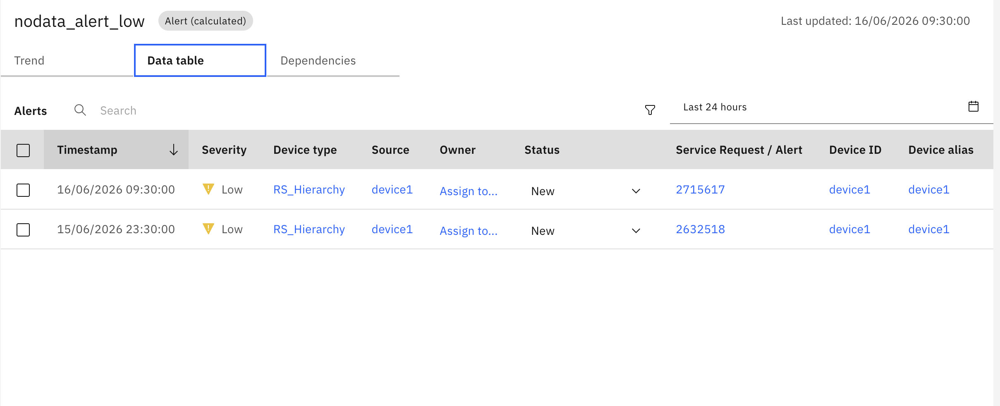

Create Alert in Manage
Objective
In this exercise, you will see Smart Alerts with Maximo Manage by enabling the Create Alert in Manage option. This integration automatically creates alerts in Maximo Manage, allowing you to view detailed alert information.
What is Create Alert in Manage?
Create Alert in Manage is a configuration option available in both NoData Alerts and AlertsByOccurrencesCount that automatically creates corresponding alerts in Maximo Manage when triggered in Monitor.
Key Features
- Automatic Alert Creation: Alerts are automatically created in Maximo Manage when triggered
- Detailed Alert Information: View comprehensive alert parameters and metrics
- Status Synchronization: Alert status updates in Monitor automatically sync with Manage
- Direct Navigation: Click alert action ID to navigate directly to Manage alert page
Configuration
Enabling Create Alert in Manage
When configuring either NoData Alert or AlertByOccurrencesCount, set the following parameter:
Create_Alert_In_Manage: True
This option is available in the UI configuration for both alert types.
Alert Information in Data Table
Once an alert is triggered, you can view the created alert ID in the Data Table tab at any resource level under column name Service Request/Alert as shown below.

Accessing Alert Details
- Navigate to the Data Table tab for your device or device type
- Locate the Service Request/Alert column
- Click on the alert action ID
- You will be redirected to the Maximo Manage alert page
Alert Summary Details
When an alert is created in Maximo Manage, it includes comprehensive information about the alert configuration and current state.
Common Alert Information
The summary is shown for every alert in Manage:
- Alert Name: Identifies the specific alert configuration
- Resource Name: Shows which Resource triggered the alert.
- Status: Current alert status (New, Resolved, etc.)
- Severity: Alert severity level (Critical, High, Medium, Low)
- Relevant Metrics: Current values of monitored data items
Congratulations! You have successfully configured Smart Alerts integration with Maximo Manage for comprehensive alert management.